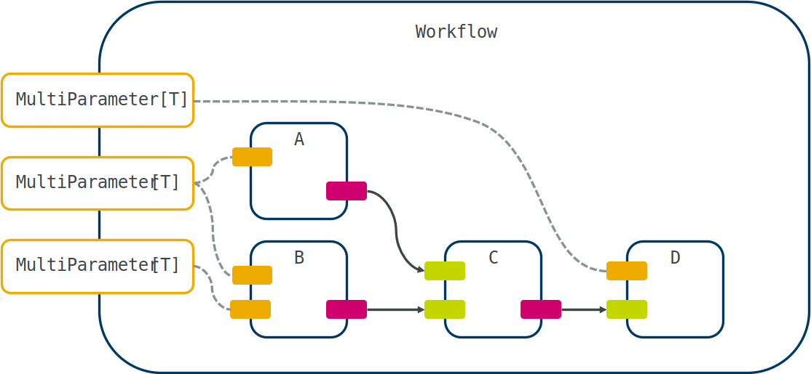
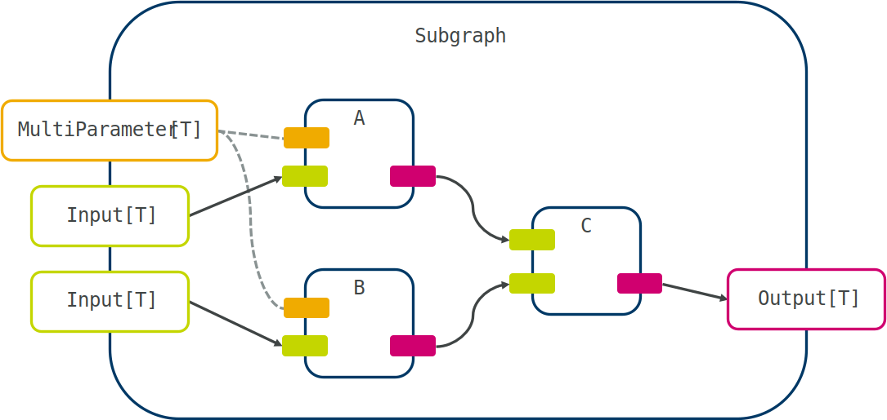
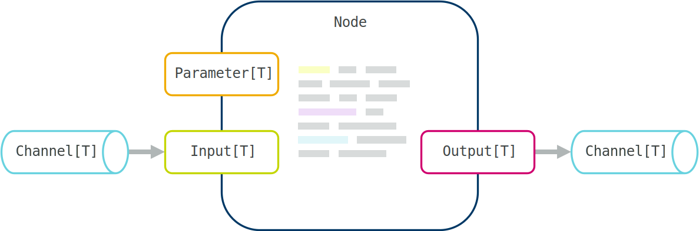

User guide#
This is a detailed user guide for maize. We will approach workflows in a top-down manner, starting with workflow definitions, followed by grouping multiple nodes together in subgraphs, and finally discussing how to implement custom functionality in your own nodes.
Workflows#
A workflow is a high-level description of a graph, allowing execution. It contains multiple nodes or subgraphs, joined together with channels. You can construct a workflow from both pre-defined nodes and custom ones to tailor a workflow to your particular needs. The following image summarizes the anatomy of a workflow with exposed parameters, with parameters shown in yellow, inputs in green, and outputs in red:
Workflows can be defined programmatically in python (the most flexible approach), or described in a tree-based serialization format (JSON, YAML, or TOML). They can then be run within python, or exposed as a commandline tool to be integrated into other pipelines. In contrast to pipelining tools like *airflow* and *luigi*, maize can run workflows with arbitrary topologies including cycles and conditionals.
Adding nodes#
Defining a workflow starts by creating a Workflow object:
from maize.core.workflow import Workflow
flow = Workflow(name="Example")
Not specifying a name will result in a random 6-character sequence being used instead. There are additional useful options:
flow = Workflow(
name="Example",
level="debug",
cleanup_temp=False,
default_channel_size=5,
logfile=Path("out.log")
)
level specifies the logging verbosity (see the python logging module), cleanup_temp specifies whether the directories created during execution should be cleaned up, default_channel_size determines how many items can sit in an inter-node channel at a time, and logfile allows one to write the logs to a file, as opposed to STDOUT.
We can then start adding nodes to the workflow using the add() method:
node = flow.add(Example)
Note that if you want to add another Example node, you will have to specify a custom name:
node2 = flow.add(Example, name="other_example")
We can again specify additional options that change the way the node is set up and how it is run, including parameters to be overridden:
other = flow.add(
OtherExample,
name="other",
parameters=dict(value=42),
loop=True,
fail_ok=True,
n_attempts=3,
max_loops=5
)
If not explicitly told to do so, the run() method of the node, containing all user code, will only run once. That means it will typically wait to receive some data, process it, send it onwards, and then shutdown. If you want to keep it running and continuously accept input, you can set loop to True. If you want to limit the maximum number of iterations, use max_loops, by default the node will loop until it receives a shutdown signal or detects neighbouring nodes shutting down.
Tip
The max_loops argument can be useful when testing the behaviour of continuously running nodes. For some examples, see the test suites for plumbing.
Any failures encountered during execution will raise an exception and cause the whole workflow to shutdown (the default), unless fail_ok is enabled. This can be useful for additional optional calculations that are not upstream of other essential nodes. Similarly, if a node is expected to fail occasionally, one can increase n_attempts from the default 1.
The order nodes are added doesn’t matter. Alternatively, if you want to add a lot of nodes at once, you can use the add_all() method and specify multiple node classes:
node, other = flow.add_all(Example, OtherExample)
You won’t be able to directly override any parameters or specify additional keyword arguments though.
Tip
When defining a new node, it will be automatically added to an internal registry of node types. The node class (not instance) can then be retrieved from the name only using the get_node_class() function.
Setting parameters#
Configuration of nodes is performed using parameters. These are typically node settings that are unique to that node and the wrapped software, and would make little sense to change during execution of a workflow. These are things like configuration files or other set-and-forget options. Parameters can be set at node instantiation with add() as mentioned above, or on the nodes themselves using the set() method:
node.value.set(37)
other.config.set(Path("config.yml"))
You can also set them on the commandline, if they are correctly exposed (see running workflows).
Alternatively, inputs can also act as parameters. This simplifies cases in which values might normally be set statically at workflow definition, but should allow changes in some special workflow cases. To enable this, Input can be instantiated with the optional flag and / or default values (using default and default_factory). In those cases, it will not have to be connected to another port and can be used as a parameter instead. Note that once the port is connected, it will not be able to be used as a parameter.
Handling external software#
In many cases, nodes will depend on packages that may have conflicts with other packages from other nodes. In this situation it is possible to run a node in a different python environment by specifying the path to the desired python executable (e.g. as part of a conda environment) to the special, always available python parameter. In this case you must make sure that the relevant imports are defined in run() and not in the top-level. In addition, the other environment must also have maize installed.
If your system has a module framework, and the node you’re using requires custom software, you can use the modules parameter to list modules to load.
Danger
Module loading is performed in the python process of the node, not in a subprocess. Thus, any modifications to the existing python environment can have unintended consequences.
If a node requires custom scripts you can use the scripts parameter to specify an interpreter - script pair, or if you installed the required command in a non-standard location (and it’s not in your PATH), you can use the commands parameter.
Tip
All these options (python, modules, scripts, commands) can be specified in a workflow-agnostic configuration file (see global config). This is useful for one-time configurations of HPC or other systems.
Connecting nodes#
The next step is connecting the individual nodes together. In most cases, you should prefer the connect() method:
flow.connect(node.output, other.input)
Maize will assign a channel connecting these ports together based on their types. If the type is a file or a list or dictionary of files (using pathlib.Path), Maize will use a special FileChannel to connect the ports, with the option of either copying the file(s) (the default, and appropriate for smaller files), creating a symlink (when dealing with potentially large files) with mode="link", or simply moving the file(s) using mode="move".
In some cases you might be faced with creating a long sequential workflow in which you are joining many nodes with a single input and single output each. In that case you can use the more convenient auto_connect() or chain() methods on the nodes instead of the ports:
flow.auto_connect(node, other)
# Or:
flow.chain(node, other, another, and_another)
In general it is better to explicitly define the connection though, as these methods will attempt to connect the first compatible pair of ports found. If you are faced with creating a lot of connections at once, you can use the connect_all() method with (output - input) pairs:
flow.connect_all(
(node.output, other.input),
(other.output, another.input)
)
Caution
Static type checking for connect_all() and add_all() is only implemented for up to 6 items due to limitations in Python’s type system.
Some nodes, especially general purpose data-piping tools such as those provided under steps, use special ports that allow multiple connections (MultiPort). In this case, just call connect() multiple times on the same port. This will create more ports and connections as required:
flow.connect_all(
(node.output, other.input),
(node.output, another.input)
)
Here we have connected the output of node to two different node inputs. Note that this is only possible with MultiPort, this is because there is some ambiguity on whether data packets should be copied or distributed (if you want to implement behaviour like this, look at the plumbing module). Under the hood, MultiPort creates multiple individual ports as required, and the node using them must loop through them to send or receive items.
Handling parameters#
One step we might want to perform is to expose node-specific parameters on the workflow level. This can be done using map(), it will simply map all node parameters to the workflow, using the same name:
flow.map(other.value, another.param, and_another.temperature)
The workflow will now have parameters named value, param, and temperature. These will be accessible as attributes on the workflow itself, or in the parameters dictionary. For more fine-grained control over naming, and mapping multiple node parameters to a single workflow parameter, use combine_parameters():
flow.val = flow.combine_parameters(other.value, another.value, name="val")
Here both passed parameters are mapped to a single one, allowing a single call to set() to adjust multiple values at once. One example where this can be useful is a temperature setting for many physical computations. Thus, a call to set() will set both other.value and another.value to 37:
flow.val.set(37)
Alternative workflow definitions#
While a workflow definition through python is the most flexible, it can also be done using a suitable serialization format. In this example we will use YAML due to its readibility, but you can also use JSON or TOML:
name: workflow
nodes:
- name: node
type: Example
parameters:
value: 42
- name: term
type: Return
channels:
- receiving:
term: input
sending:
node: output
This file is equivalent to the following python code:
flow = Workflow("workflow")
node = flow.add(Example, name="node", parameters=dict(value=42))
term = flow.add(Return, name="term")
flow.connect(node.output, term.input)
Any arguments you would normally pass to the node initialization can be defined under the node list item. To read in the workflow defined above the from_file() method can be used:
flow = Workflow.from_file("file.yaml")
Important
You may need to import the relevant node definitions before loading the workflow.
You can also save workflows to a file to recover them later:
flow.to_file("file.yaml")
You can also save a workflow to a normal python dictionary and use your own serialization method using to_dict() and from_dict().
Running workflows#
Before we run our workflow it is good practice to check that is has been constructed correctly and that all dependencies are accessible:
flow.check()
check() ensures that all nodes are connected, that the types used are consistent, all non-optional parameters are set, and will attempt to run each node in it’s designated environment (using prepare()) by loading modules, packages and ensuring all required software is available. Running our constructed workflow is now just as simple as:
flow.execute()
This will log the execution progress to STDOUT by default. However in many cases we will want to execute a given workflow as a commandline tool, in the form of a python script. To do so we can use the setup_workflow() function:
setup_workflow(flow)
Hint
On some systems it might be necessary to use the if __name__ == "__main__": ... guard with workflow scripts to avoid issues with spawning new processes.
It will create an argument parser with two groups: one for general maize parameters governing verbosity, global configuration, and whether to only check the graph without running it; and another one for any exposed parameters. This means that a workflow script can be called like this:
python workflow.py --val 42
Calling the script with --help will show all available maize and workflow-specific options:
Short |
Long |
Information |
|---|---|---|
|
|
Check if the graph was built correctly and exit |
|
|
List all available nodes and exit |
|
|
List all exposed workflow parameters and exit |
|
|
Provide debugging information |
|
|
Silence all output except errors and warnings |
|
|
Keep all output files |
|
|
Global configuration file to use |
|
|
Logfile to use (instead of |
|
|
A serialized file containing additional parameters |
If you have a workflow in a serialized format, you can run it using the maize command:
maize flow.yaml
Note
In maize-contrib, complete workflows are defined as functions and then exposed in setup.cfg as runnable scripts. This allows a far simpler commandline usage.
Configuring workflows#
Maize further allows the use of a global configuration file (--config) to adjust options that are more workflow-independent. Here’s an example:
1# maize global configuration file example
2
3# Where to save temporary files and all workflow directories
4scratch = "/tmp"
5
6# Additional packages to load
7packages = [
8 "maize.steps.mai"
9]
10
11# Environment variables to be set globally
12[environment]
13EXAMPLE = "VARIABLE"
14OTHER_EXAMPLE = "OTHER_VARIABLE"
15
16# Batch job system options
17[batch]
18system = "slurm" # Can be one of {'cobalt', 'flux', 'local', 'lsf', 'pbspro', 'rp', 'slurm'}
19max_jobs = 100 # The maximum number of jobs that can be submitted by a node at once
20queue = "core"
21project = "your_project"
22launcher = "srun" # The launcher to use for the command, usually one of {'srun', 'mpirun', 'mpiexec'}
23walltime = "24:00:00" # Job walltime limit, shorter times may improve queueing times
24
25# The next sections configure nodes requiring specific executables,
26# here we are configuring the node defined as ``Example``:
27[example]
28python = "path/to/python"
29
30# Modules to load
31modules = ["program_module/1.0"]
32
33# Commands and their paths
34commands.other_program = "path/to/other_program"
35
36# You can also expand environment variables that might have been set by the module
37commands.another_program = "$MODULE_ENV_VAR/another_program"
38
39# Scripts that require a specific interpreter
40scripts.program.interpreter = "path/to/python"
41scripts.program.location = "path/to/program/or/folder"
42
43# Default parameter settings for this node
44parameters.value = 42
While not recommended, you can also specify the config in python, or overwrite specific parts of it:
from maize.utilities.io import Config, NodeConfig
flow.config = Config()
flow.config.update(Path("path/to/config.toml"))
flow.config.scratch = Path("./")
flow.config.nodes["vina"] = NodeConfig(modules=["OtherVinaModule"])
Here, NodeConfig is a node-level configuration class allowing the specification of paths to any required software.
By default Config will look for a configuration file named maize.toml in $XDG_CONFIG_HOME (usually at ~/.config/, see here for more information on the XDG standard) or one specified using the MAIZE_CONFIG environment variable. If you’re confused about what to add to your config for a particular workflow, you can use generate_config_template() to create a TOML template that you can populate with the correct paths. Note that only one of scripts and commands needs to be specified for a given command.
Subgraphs#
When creating complex workflows, we will often find ourselves in a situation where multiple nodes can be grouped together to one logical unit – a subgraph:
This is where subgraphs can be helpful. To define them, create a new class with Graph as a base, and add nodes by calling the add() and connect() methods in a custom build() method, as if we were creating a normal workflow:
from maize.core.graph import Graph
from maize.steps.plumbing import Delay
class SubGraph(Graph):
out: Output[int]
delay: Parameter[int]
def build(self) -> None:
node = self.add(Example)
delay = self.add(Delay, parameters=dict(delay=2))
self.connect(node.out, delay.inp)
self.out = self.map_port(delay.out)
self.map(delay.delay)
A key difference between a subgraph and a workflow is that the former will always have exposed ports. We however have to clarify which port should be exposed how, by using the map_port() method and specifying a reference to the original port of a contained node and optionally a new name. We can again use the map() convenience method to automatically expose parameters. Note that to get the benefits of type-checking you should in those cases declare all interfaces in the class body. To group multiple parameters together, we can again use combine_parameters(). SubGraph will now behave just like any other component in the workflow:
sg = flow.add(SubGraph, parameters=dict(delay=3))
flow.connect(sg.out, another.inp)
A common situation is running all contained nodes in a loop, in this case you can pass loop=True just like for a normal node. At execution, the whole workflow is flattened and each node executed normally, irrespective of nesting. The subgraph paradigm is therefore mostly a conceptual aid for complex workflows.
Custom nodes#
A node is the fundamental unit of computation in maize. It features at least one port, and any number of parameters that allow communication with other nodes and the user, respectively:
Each port (and by extension channel) has a specific type associated that will prevent a graph from succeeding with a call to check() in case of type mismatches. All interfaces of a port will typically be available as attributes, but can also be accessed through specific dictionaries (inputs, outputs and parameters). All computation is performed in run(), which is defined by the user. This is an example node definition:
from maize.core.node import Node
from maize.core.interface import Parameter, Output
class Example(Node):
out: Output[str] = Output()
data: Parameter[str] = Parameter(default="hello")
def run(self) -> None:
self.out.send(self.data.value)
This node takes a str as a parameter (with a default value of "hello") and outputs it to an output port. It only runs this once (unless added to the workflow with loop set to True), and if the call to send() was successful it will immediately return and complete. It’s also possible to specify optional parameters with no default value using the optional keyword in the Parameter constructor.
Handling files#
A custom node can also send and receive files. This can be accomplished by specifying pathlib.Path as a type. If you expect the files you are receiving or sending to be very large, you should also set the mode parameter to 'link' or 'move', to ensure that large files don’t get copied.
from maize.core.node import Node
from maize.core.interface import Parameter, Output
class Example(Node):
out: Output[Path] = Output(mode="link")
data: Parameter[str] = Parameter(default="hello")
def run(self) -> None:
path = create_large_file(self.data.value)
self.out.send(path)
Behind the scenes, maize lets the receiving node know that one or more files are available. The files only get copied or linked once the other node calls the receive() method, avoiding most situations in which files could be overwritten.
Looped execution#
The above example represents a case of a single execution. We may however be interested in performing some form of continuous repeating computation. This can be accomplished by passing loop=True to the node or subgraph when adding it to the workflow. The following node, when used with looping, will continuously send the same value, akin to the Unix yes command:
from maize.core.node import Node
from maize.core.interface import Parameter, Output
class Example(Node):
out: Output[str] = Output()
data: Parameter[str] = Parameter(default="hello")
def run(self) -> None:
self.out.send(self.data.value)
However, in some cases you might want to keep state over multiple loops. In that situation, you can setup any data structures you need in the prepare() method (making sure to call the base method using super). The RoundRobin node is a good example of this:
class RoundRobin(LoopedNode, Generic[T]):
"""
Outputs a single input packet to a single output port at a time,
cycling through output ports.
"""
inp: Input[T] = Input()
"""Single input to alternatingly send on"""
out: MultiOutput[T] = MultiOutput(optional=True)
"""Multiple outputs to distribute over"""
_output_cycle: Iterator[Output[T]]
_current_output: Output[T]
def prepare(self) -> None:
super().prepare()
self._output_cycle = itertools.cycle(self.out)
self._current_output = next(self._output_cycle)
def run(self) -> None:
if not self.inp.active or all(not out.active for out in self.out):
raise PortInterrupt("Inactive ports")
self._current_output.send(self.inp.receive())
self._current_output = next(self._output_cycle)
Here, we called the base prepare() method, followed by creating an iterator over all outputs, and initializing the first output by calling next. In run(), we can use this output as normal and increment the iterator.
Caution
Patterns using continuous loops like this always have the potential to cause deadlocks, as they have no explicit exit condition. In many cases however downstream nodes that finish computation will signal a port shutdown and consequently cause the sending port to exit.
A common pattern with looped nodes is an optional receive, i.e. we will want to receive one or multiple values (see MultiPort) only if they are available and then continue. This can be accomplished by using optional ports, and querying them using ready() before attempting to receive:
from maize.core.node import Node
from maize.core.interface import MultiInput, Output
class Example(Node):
inp: MultiInput[str] = MultiInput(optional=True)
out: Output[str] = Output()
def run(self) -> None:
concat = ""
for inp in self.inp:
if inp.ready():
concat += inp.receive()
self.out.send(concat)
This node will always send a value every iteration, no matter if data is available or not. The optional flag will also ensure it can shutdown correctly when neighbouring nodes stop. Alternatively you can use the receive_optional() method to unconditionally receive a value, with the possibility of receiving None.
Another useful option is to allow an input to cache a previously received value by adding the cached flag to the constructor:
from maize.core.node import Node
from maize.core.interface import Input, Output
class Example(Node):
inp: Input[str] = Input(cached=True)
out: Output[str] = Output()
def run(self) -> None:
data = self.inp.receive()
self.out.send(data + "-bar")
In this case, if the node received the string "foo" the previous iteration, but hasn’t been sent a new value this iteration, it will still receive "foo". This is particularly useful for setting up parameters at the beginning of a workflow and then keeping them unchanged over various internal loops.
Generic nodes#
When designing nodes for general purpose “plumbing” use, it is attractive to allow generic types. Rather than using typing.Any, it is safer to use a typing.TypeVar, for example like this:
import time
from typing import TypeVar, Generic
from maize.core.node import Node
from maize.core.interface import Input, Output
T = TypeVar("T")
class Example(Node, Generic[T]):
inp: Input[T] = Input()
out: Output[T] = Output()
def run(self) -> None:
data = self.inp.receive()
time.sleep(5)
self.out.send(data)
This informs the type system that Example can receive any value, but the sent value will be of the same type. When creating a workflow, we should however explicitly specify the type when adding nodes:
node = flow.add(Example[int], name="node")
This way we get static typing support throughout our workflow, minimizing errors in graph construction.
Caution
Dynamic type-checking with generic nodes is currently in an experimental phase. If you encounter problems, using typing.Any is a temporary work-around.
Running commands#
There are two main ways of running commands: locally or using a resource manager (such as SLURM). Both can be used through run_command() and run_multi(): by default any command will simply be run locally (with optional validation) and return a subprocess.CompletedProcess instance containing the returncode and any output generated on standard output or standard error.
Software dependencies#
A common issue is that many programs will require some environment preparation that is often heavily system dependent. To accomodate this, any node definitions should include a required_callables definition listing the commands or software that is necessary to run, and / or a required_packages attribute listing python packages required in the environment. They can then be specified in the global config using the modules, scripts, and commands parameters or using the corresponding pre-defined parameters (see handling software). For example, if the node MyNode requires an executable named executable, it will first load any modules under the MyNode heading, followed by looking for an entry including executable in the commands and scripts sections. Any discovered matching commands will be place in the runnable dictionary, which can be used with any command invocation:
class Example(Node):
required_callables = ["executable"]
required_packages = ["my_package"]
inp: Input[float] = Input()
out: Output[float] = Output()
def run(self) -> None:
import my_package
data = self.inp.receive()
res = self.run_command(f"{self.runnable['executable']} --data {data}")
self.out.send(float(res.stdout))
Here, we are running a command that takes some floating point value as input, and outputs a result to standard output. We convert this output to a float and send it on. In practice you will probably need more sophisticated parsing of command outputs. The associated configuration section might look something like this:
[example]
python = "/path/to/python/interpreter" # must contain 'my_package'
commands.executable = "/path/to/executable"
If executable is a script and requires a preceding interpreter to run, your configuration might look like this instead:
[example]
python = "/path/to/python/interpreter" # must contain 'my_package'
scripts.executable.interpreter = "/path/to/interpreter"
scripts.executable.location = "/path/to/script"
If your node requires more customized environment setups, you can override the prepare() method with your own initialization logic (making sure to call the original method using super).
Running in parallel#
You can also run multiple commands in parallel using run_multi(). It takes a list of commands to run and runs them in batches according to the n_jobs parameter. This can be useful when processing potentially large batches of data with software that does not have its own internal parallelization. Each command can optionally be run in a separate working directory, and otherwise accepts the same parameters as run_command():
class Example(Node):
required_callables = ["executable"]
inp: Input[list[float]] = Input()
out: Output[list[float]] = Output()
def run(self) -> None:
data = self.inp.receive()
commands = [f"{self.runnable['executable']} --data {d}" for d in data]
results = self.run_multi(commands, n_jobs=4)
output = [float(res.stdout) for res in results]
self.out.send(output)
We did the same thing as above, but receive and send lists of floats and run our executable in parallel, using 4 jobs.
Job submission#
To make use of batch processing systems common in HPC environments, pass execution options (JobResourceConfig) to run_command():
class Example(Node):
inp: Input[float] = Input()
out: Output[float] = Output()
def run(self) -> None:
data = self.inp.receive()
options = JobResourceConfig(nodes=2)
self.run_command(f"echo {data}", batch_options=options)
self.out.send(data)
Batch system settings are handled in the maize configuration (see configuring workflows) using ResourceManagerConfig, for example:
[batch]
system = "slurm"
queue = "core"
walltime = "00:05:00"
Running batch commands in parallel can be done using run_multi() in the same way, i.e. passing a JobResourceConfig object to batch_options. In this case, n_jobs refers to the maximum number of jobs to submit at once. A common pattern of use is to first prepare the required directory structure and corresponding commands, and then send all commands for execution at once.
Resource management#
Because all nodes run simultaneously on a single machine with limited resources, maize features some simple management tools to reserve computational resources:
class Example(Node):
inp: Input[float] = Input()
out: Output[float] = Output()
def run(self) -> None:
data = self.inp.receive()
with self.cpus(8):
data = do_something_heavy(data)
self.out.send(data)
You can also reserve GPUs (using gpus) using the same syntax.
Advanced options#
There are multiple additional options for run_command() and run_multi() that are worth knowing about:
Option |
Information |
|---|---|
|
A list of |
|
If |
|
If |
|
Can be used to send data to standard input. This can be used for commands that might normally require manual user input or interactivity on the commandline. |
|
Any command to run just before the main command. Note that if you need to load modules or set environment variables, you should use the options in the configuration system instead (see handling software). Not only does this allow full de-coupling of system and workflow configuration, but it is also more efficient as a module will only be loaded once. |
|
Maximum runtime for a command in seconds. |
|
Run in this directory instead of the node working directory ( |